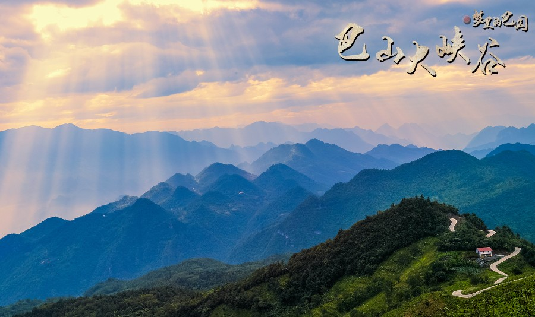
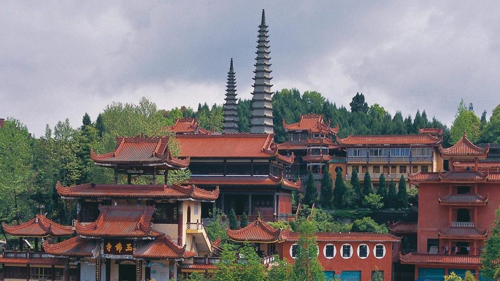

城市美食

巴山大峡谷
巴山大峡谷前身为“宣汉百里峡”,位于四川省达州市宣汉县境内,是喀斯特岩溶地貌构成的山地峡谷型自然风景区,是国家AAAA级旅游景区,大巴山国家地质公园,国家森林公园， 省级自然保护区，天然褶皱造型博物馆，崖柏保护地，四川十大红叶旅游目的地，古巴人文化的富集地，国家级非物质文化遗产土家薅草锣鼓衍生地、最受网民喜爱的网红打卡。
賨人谷
賨人谷是国家AAAA级旅游区,省级风景名胜区,省级森林公园,省级生态旅游示范区。賨人谷位于四川省达州市渠县城东26公里,地处华蓥山脉中北段,面积41平方公里, 以奇山、秀水、幽洞、丽峡、飞瀑、湖泊、涌泉、怪石、古栈、茂林著称，被誉为川东“小九寨”。 賨人谷拥有全国唯一的賨人穴居部落遗址和賨人文化陈列馆,有“奇山奇水奇石景，古賨古洞古部落”的美誉。

真佛山
真佛山国家AAAA级旅游景区，省级风景名胜区，省级重点文物保护单位，是集佛教、儒教、道教于一体的“三教圣地”。真佛山相传是如来佛祖下凡投胎化为孝子，取名蒋德化，自幼以孝善为本，曾五次割股疗亲和救治当地百姓，后落发为僧，在此自立佛堂，修建庙宇，取名“德化寺”，从此扬名千里，香火日益鼎盛。
八台山
八台山景区由“巴山天池，棋盘妙韵，默音石芽，层峦叠翠、一峰独秀、壁立千仞、观音圣泉、八台金鼎”等景点组成。这里石芽林立、形态奇巧、绝壁断崖，蔚为壮观，系典型的喀斯特地貌。“云海、日出、雾岚”堪称“三绝”，且常有“佛光”毕现，故“川西有峨眉，川东有八台”之美称。